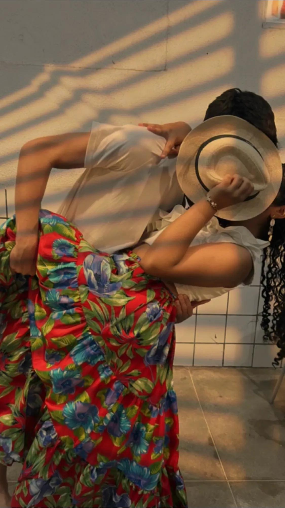
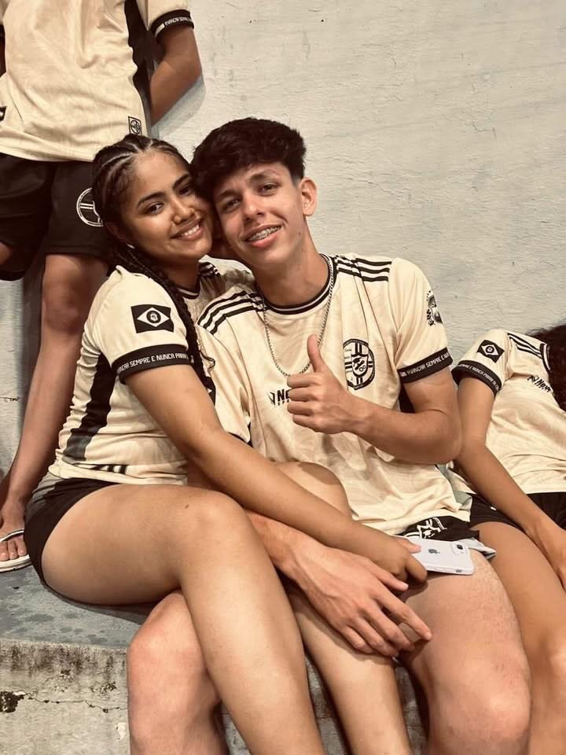
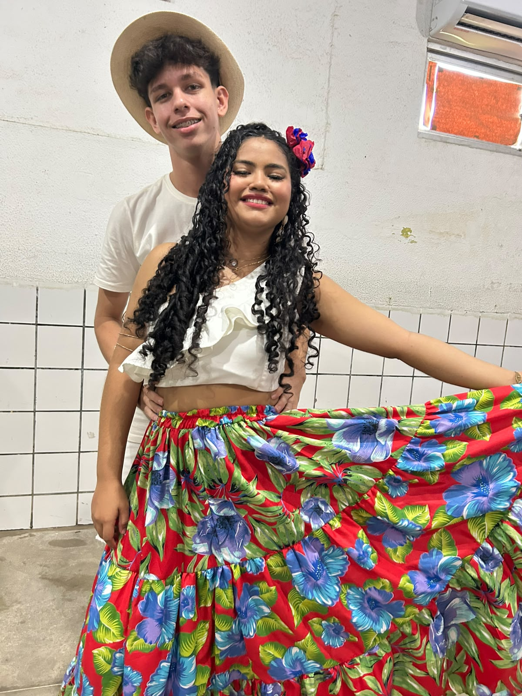
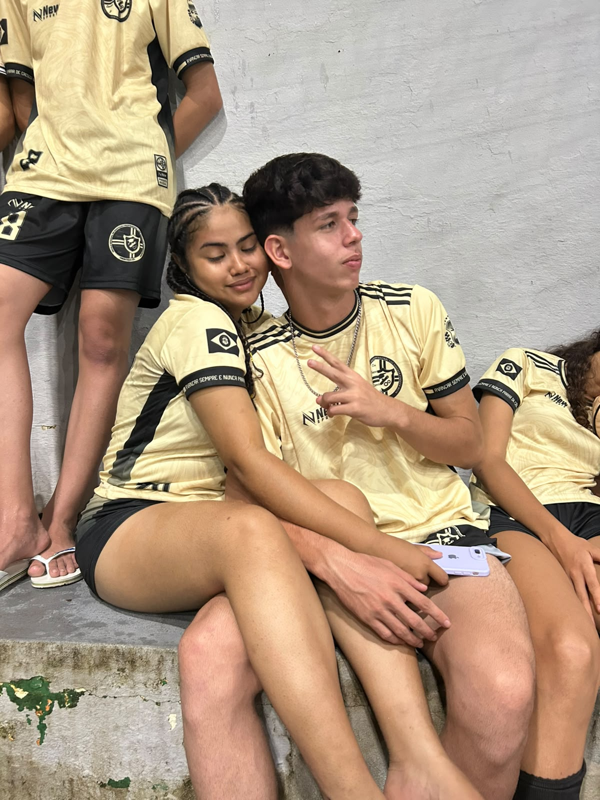

Dia 12 você recebe uma dica da senha 😜
Eu te amo mais do que palavras conseguem explicar.
Meu amor, Mesmo te entregando essa carta alguns dias depois do seu aniversário, eu não poderia deixar passar a oportunidade de te dizer o quanto você é especial para mim. Primeiramente, feliz aniversário! Eu espero que esse novo ciclo da sua vida seja cheio de coisas boas, de conquistas, de momentos felizes e de sonhos realizados. Você merece tudo isso e muito mais. Às vezes eu paro para pensar em tudo o que já vivemos e percebo o quanto você se tornou importante na minha vida. Seu jeito, seu sorriso, suas brincadeiras e até os pequenos momentos do dia fazem diferença para mim. Eu sou muito grato por ter você ao meu lado e por poder fazer parte da sua vida. Espero continuar comemorando muitos aniversários seus, criando novas memórias e vivendo muitos momentos juntos. Que Deus continue abençoando sua vida e que você nunca perca essa pessoa incrível que é. Feliz aniversário, meu amor. ❤️
Tem momentos que passam, mas nunca saem da nossa memória. E quando eu penso em nós, várias lembranças vêm na minha cabeça. Lembro dos Jogos Escolares em Itapipoca, não éramos tão próximos, mas já te olhava diferente kkkk. Das conversas, das brincadeiras e de cada momento que passamos juntos. Esse ano veio Paracuru, onde eu diria que tudo começou dnv, a gente praticamente se assumiu para os outros e nosso laço ficou ainda mais forte e começamos a despertar sentimentos incríveis pelo outro. Mas, sem dúvida, uma lembrança que ficou muito marcada para mim, foi no dia da novena daqui kkkk, não é atoa a senha que eu coloquei. Onde ficamos pela primeira vez, depois de muitas tentativaskkk. Pode parecer algo simples para algumas pessoas, mas para mim foi um momento que marcou a minha vida. Eu lembro da emoção, do nervosismo e da felicidade que senti naquele dia. É uma lembrança que eu guardo com muito carinho e que sempre vai ter um espaço especial no meu coração. Quando olho para trás, vejo quantas histórias já construímos juntos. E o mais bonito é saber que ainda temos muitas outras para viver. Obrigado por fazer parte dos meus dias e por ter transformado momentos simples em lembranças que eu nunca vou esquecer. Eu te amo, bemm muitão. ❤️
Hoje é Dia dos Namorados, e eu queria te escrever algo de coração. Nem sempre eu consigo demonstrar tudo o que sinto, mas quero que você saiba o quanto sou feliz por ter você na minha vida. Quando penso em tudo o que já vivemos, lembro de muitos momentos especiais que fizeram parte da nossa história. Lembro também do Fest. Sinceramente, não foi uma das melhores lembranças para mim, mas, olhando hoje, eu consigo enxergar as coisas boas que ficaram. Outra memória que vou levar para vida, nossa dança no Carimbó, só você mesmo para me fazer dançar viu kkkkk, mas foi muito bom poder fazer tudo isso ao seu lado. Lembrar das risadas durante os ensaios, dos momentos em que a gente errava os passos, das brincadeiras e da felicidade que era estar perto de você. No final das contas, o que ficou guardado na minha memória não foram os momentos ruins, mas sim os momentos em que eu estava com você. Você é uma pessoa que marcou minha vida de uma forma que talvez nem imagine. Cada conversa, cada abraço, cada sorriso seu ficou guardado em mim. Eu gosto de pensar que nossa história é feita desses pequenos momentos. Não são apenas os grandes acontecimentos que importam, mas tudo aquilo que vivemos juntos ao longo do caminho. Obrigado por ser você. Obrigado por fazer parte da minha vida. Neste Dia dos Namorados, eu só quero te lembrar de uma coisa: Eu te amo muito e sou muito feliz por ter você ao meu lado. ❤️



